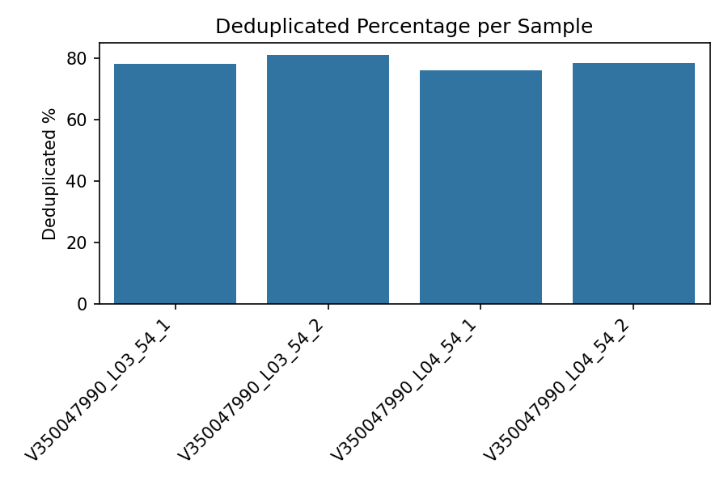

关于项目
随着基因检测技术的发展，越来越多的人可以透过基因检测预测或评估个体的健康状况。 WESlite 可为个体、医生、研究人员、政府及医疗机构提供辅助科研、分析工具和评估报告。 帮助提高个体生活质量，降低医疗成本。
Gene Analysis Results (V5.7)


Disease Analysis
您可尝试申请 免费试用，我们将在资源允许的情况下予以支持。
关于我们
WESlite是一个活跃在加拿大-中国的科研团队，隶属于西湖科技有限公司（Westlake Science & Technology Limited）。 主要承接医疗、大数据、遥感等相关项目的开发、定制与研究。
About Us
联系我们
邮箱: aaronwangwlst@gmail.com
电话: +1 604-655-2905
Facebook: WESliteTeam
Contact Us
Wechat: